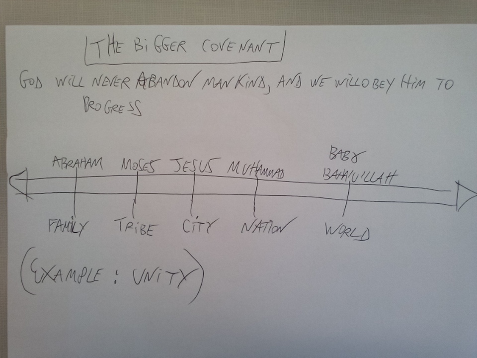
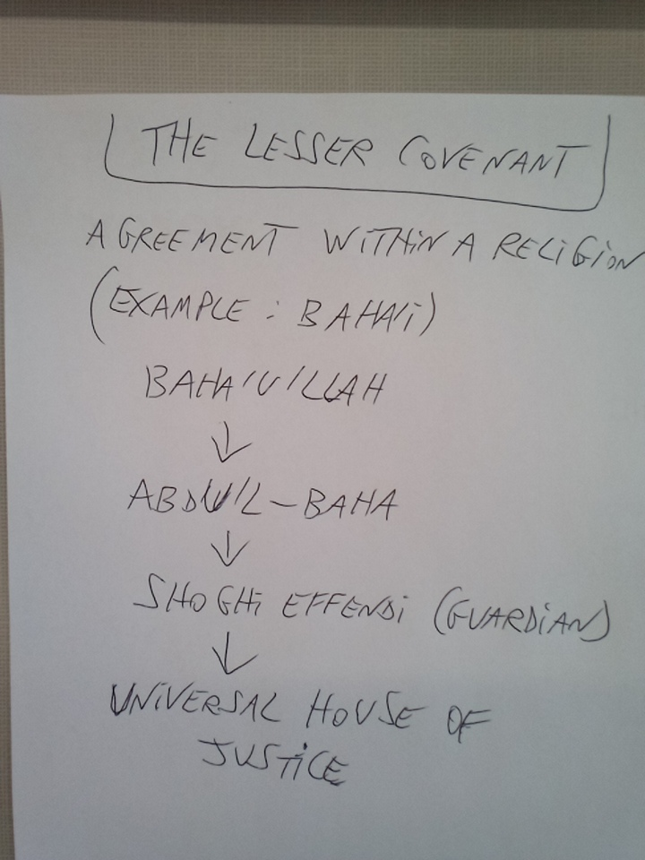

1) Know therefore that the Lord your God is God; he is the faithful God, keeping his covenant of love to a thousand generations of those who love him and keep his commandments.
— Deuteronomy 7:9 (Bible)
2) I will put my law in their minds and write it on their hearts. I will be their God, and they will be my people.
— Jeremiah 31:33 (Bible)
3) This is my blood of the covenant, which is poured out for many for the forgiveness of sins.
— Matthew 26:28 (Bible)
4) And [recall, O People of the Scripture], when Allah took the covenant of the prophets, [saying], 'Whatever I give you of the Scripture and wisdom and then there comes to you a messenger confirming what is with you, you [must] believe in him and support him.'
— Surah Ali 'Imran 3:81 (Qur'an)
5) And fulfill the covenant of Allah when you have taken it, [O believers], and do not break oaths after their confirmation...
— Surah An-Nahl 16:91 (Qu'ran)
6) Gather them… together around this Divine Law, the covenant of which Thou hast established with all Thy Prophets and Thy Messengers, and Whose ordinances Thou hast written down in Thy Tablets and Thy Scriptures.
- Baha’u'llah, Prayers and Meditations by Baha’u'llah, p. 106
7) A Covenant in the religious sense is a binding agreement between God and man, whereby God requires of man certain behaviour in return for which He guarantees certain blessings, or whereby He gives man certain bounties in return for which He takes from those who accept them an undertaking to behave in a certain way.
- The Universal House of Justice, 23 March 1975, The Covenant compilation
8) The Covenant of God in this Day of Manifestation is a Lifeboat, an Ark of Salvation. All true followers of the Blessed Perfection are sheltered and protected in this Ark. Whoever leaves it, trusting in his own will and strength, will drown and be destroyed. For the Blessed Perfection left no possibility for discord, disagreement, and dissension. The Covenant is like the sea, and the believers are as the fishes in the sea. If a fish leaves the water, it cannot live.
- Abdu’l-Baha, quoted in Ten days in the Light of Akka p. 49
TWO PICTURES ABOUT THE COVENANT (By Ryan)

